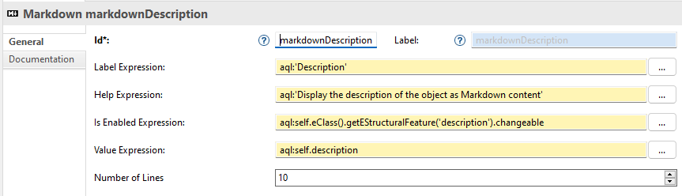
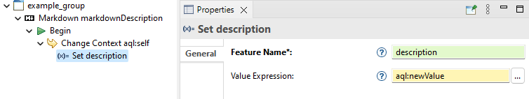
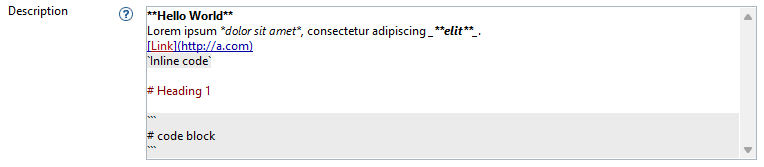

The Markdown widget is used to display values that can be represented as Markdown content. On top of the common properties of all widgets (identifier, labelExpression, helpExpression, isEnabledExpression, propertyValidationRules), it has the following properties:
newValue. The variable
newValue is a
java.lang.String. This expression does not have to return anything.
1 for a single line text field or
5 (for example) for a multiline text field.
In order to display a Markdown content in the user interface with the value of an EAttribute with the eType EString (i.e. the description of an EObject), you can create a Markdown widget with the following properties:


Here is a result of the displayed Markup Content with this widget in the Properties View:

EEF does not provide a default interpreter but you can easily configure EEF to be used with the AQL interpreter. In the integration of EEF with the AQL interpreter, you can register additional services, written in Java, in which you can expose to AQL new operations. The operation
eSet(java.lang.String, java.lang.Object) used in the example does not exist in AQL. You would have to create it yourself.